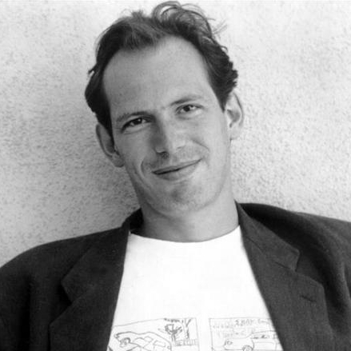

ABOUT
Hans Florian Zimmer is a German film score composer and music producer. He has won two Oscars and four Grammys, and has been nominated for two Emmys and a Tony. Zimmer was also named on the list of Top 100 Living Geniuses, published by The Daily Telegraph.
His works are notable for integrating electronic music sounds with traditional orchestral arrangements. Since the 1980s, Zimmer has composed music for over 150 films. His works include The Lion King (for which he won the Academy Award for Best Original Score in 1995), Gladiator, The Last Samurai, the Pirates of the Caribbean series, The Dark Knight trilogy, Inception, Interstellar and Dunkirk. He won a second Academy Award for Dune in 2022.
Zimmer spent the early part of his career in the United Kingdom before moving to the United States. He is the head of the film music division at DreamWorks studios and works with other composers through the company that he founded, Remote Control Productions, formerly known as Media Ventures. His studio in Santa Monica, California has an extensive range of computer equipment and keyboards, allowing demo versions of film scores to be created quickly.
Early life
Zimmer was born on 12 September 1957 in Frankfurt, West Germany. As a young child, he lived in Königstein-Falkenstein, where he played the piano at home but had piano lessons only briefly, as he disliked the discipline of formal lessons. In one of his Reddit AMAs, he said: "My formal training was two weeks of piano lessons. I was thrown out of eight schools. But I joined a band. I am self-taught. But I've always heard music in my head. And I'm a child of the 20th century; computers came in very handy." Zimmer attended the Ecole D'Humanité, an international boarding school in Canton Bern, Switzerland. He moved to London as a teenager, where he attended Hurtwood House school. During his childhood, he was strongly influenced by the film scores of Ennio Morricone and has cited Once Upon a Time in the West as the score that inspired him to become a film composer.
In a speech at the 1999 Berlin Film Festival, Zimmer stated that he is Jewish, and talked about his mother surviving World War II thanks to her escape from Germany to England in 1939. In an interview in May 2014, Zimmer revealed that it was difficult growing up in post-War Germany being Jewish and said, "I think my parents were always wary of me telling the neighbors" that they were Jewish. In an interview with Mashable in February 2013, he said of his parents: "My mother was very musical, basically a musician and my father was an engineer and an inventor. So I grew up modifying the piano, shall we say, which made my mother gasp in horror, and my father would think it was fantastic when I would attach chainsaws and stuff like that to the piano because he thought it was an evolution in technology." In an interview with the German television station ZDF in 2006, he commented: "My father died when I was just a child, and I escaped somehow into the music and music has been my best friend."
Career
1977-1988
Zimmer began his career playing keyboards and synthesizers in the 1970s, with the band Krakatoa. He worked with the Buggles, a new wave band formed in London in 1977 with Trevor Horn, Geoff Downes, and Bruce Woolley. Zimmer can be seen briefly in the Buggles' music video for the 1979 song "Video Killed the Radio Star". After working with the Buggles, he started to work for the Italian group Krisma, a new wave band formed in 1976 with Maurizio Arcieri and Christina Moser. He was a featured synthesist for Krisma's third album, Cathode Mamma. He has also worked with the band Helden (with Warren Cann from Ultravox). Both Zimmer (on keyboards) and Cann (on drums), were invited to be part of the Spanish group Mecano for a live performance in Segovia (Spain) in 1984. Two songs from this concert were included in the "Mecano: En Concierto" album released in 1985 only in Spain. In 1985, he contributed to the Shriekback album Oil & Gold. In 1980, Zimmer co-produced a single, "History of the World, Part 1," with, and for, UK punk band The Damned, which was also included on their 1980 LP release, The Black Album, and carried the description of his efforts as "Over-Produced by Hans Zimmer."

While living in London, Zimmer wrote advertising jingles for Air-Edel Associates. In the 1980s, Zimmer partnered with Stanley Myers, a prolific film composer who wrote the scores for over sixty films. Zimmer and Myers co–founded the London–based Lillie Yard recording studio. Together, Myers and Zimmer worked on fusing the traditional orchestral sound with electronic instruments. Some of the films on which Zimmer and Myers worked are Moonlighting (1982), Success Is the Best Revenge (1984), Insignificance (1985), and My Beautiful Laundrette (1985). Zimmer's first solo score was Terminal Exposure for director Nico Mastorakis in 1987, for which he also wrote the songs. Zimmer acted as score producer for the 1987 film The Last Emperor, which won the Academy Award for Best Original Score.
One of Zimmer's most durable works from his time in the United Kingdom was the theme song for the television game show Going for Gold, which he composed with Sandy McClelland in 1987. In an interview with the BBC, Zimmer said: "Going for Gold was a lot of fun. It's the sort of stuff you do when you don't have a career yet. God, I just felt so lucky because this thing paid my rent for the longest time."
1988-2000
A turning point in Zimmer's career occurred with the 1988 film Rain Man. Hollywood director Barry Levinson was looking for someone to score Rain Man, and his wife heard the soundtrack CD of the anti-apartheid drama A World Apart, for which Zimmer had composed the music. Levinson was impressed by Zimmer's work and hired him to score Rain Man. In the score, Zimmer uses synthesizers (mostly a Fairlight CMI) mixed with steel drums. Zimmer explained that "It was a road movie, and road movies usually have jangly guitars or a bunch of strings. I kept thinking don't be bigger than the characters. Try to keep it contained. The Raymond character doesn't actually know where he is. The world is so different to him. He might as well be on Mars. So, why don't we just invent our own world music for a world that doesn't really exist?" Zimmer's score for Rain Man was nominated for an Academy Award in 1989, and the film won four Academy Awards including Best Picture.

A year after Rain Man, Zimmer was asked to compose the score for Bruce Beresford's Driving Miss Daisy which, like Rain Man, won an Academy Award for Best Picture. Driving Miss Daisy's instrumentation consisted entirely of synthesizers and samplers, played by Zimmer. According to an interview with Sound on Sound magazine in 2002, the piano sounds heard within the score come from the Roland MKS–20, a rackmount synthesizer. Zimmer joked: "It didn't sound anything like a piano, but it behaved like a piano."
The soundtrack to Ridley Scott's 1991 film Thelma & Louise by Zimmer featured the trademark slide guitar performance by Pete Haycock on the "Thunderbird" theme in the film. As a teenager, Zimmer was a fan of Haycock, and their collaboration on film scores includes K2 and Drop Zone. Zimmer wrote the theme for Tony Scott's 1993 film True Romance, which he based on Carl Orff's Gassenhauer. Gassenhauer had previously been used in the 1973 film Badlands, which had a similar story of a young man and a girl on the run following a violent crime. The catchy theme, played on nine marimbas, contrasts starkly with the violence of the film.
For the 1992 film The Power of One, Zimmer traveled to Africa in order to use African choirs and drums in the recording of the score. On the strength of this work, Walt Disney Feature Animation approached Zimmer to compose the score for the 1994 film The Lion King. This was to be his first score for an animated film. Zimmer said that he had wanted to go to South Africa to record parts of the soundtrack, but was unable to visit the country as he had a police record there "for doing 'subversive' movies" after his work on The Power of One. Disney studio bosses expressed fears that Zimmer would be killed if he went to South Africa, so the recording of the choirs was organized during a visit by Lebo M. Zimmer won numerous awards for his work on The Lion King, including an Academy Award for Best Original Score, a Golden Globe, and two Grammys. In 1997, the score was adapted into a Broadway musical version which won the Tony Award for Best Musical in 1998. As of April 2012, the musical version of The Lion King is the highest grossing Broadway show of all time, having grossed $853.8 million.
Zimmer's score for Tony Scott's 1995 film Crimson Tide won a Grammy Award for the main theme, which makes heavy use of synthesizers in place of traditional orchestral instruments. For The Thin Red Line (1998), Zimmer said that the director Terrence Malick wanted the music before he started filming, so he recorded six and a half hours of music. Zimmer's next project was The Prince of Egypt (1998), which was produced by DreamWorks Animation. He introduced Ofra Haza, an Israeli Yemenite singer, to the directors, and they thought she was so beautiful that they designed one of the characters in the film to look like her.
Zimmer's score for the 1998 film The Thin Red Line is regarded as one of his most important works. The nine minute cue at the climax of the film, "The Journey to the Line" uses a recurring theme based on four chords, combined with a "ticking clock" motif that has been featured in a range of subsequent scores composed by Zimmer. The piece has been used in numerous trailers and video games, and has earned the nickname "the forbidden cue" due to the tendency of film makers to use it as a temp track for dramatic scenes.
2000-2012
In the 2000s, Zimmer composed scores for Hollywood blockbuster films including three Ridley Scott films, Gladiator (2000), Black Hawk Down and Hannibal (2001), followed by The Last Samurai (2003), Madagascar (2005), The Da Vinci Code (2006), The Simpsons Movie (2007), Kung Fu Panda (2008), which he co-composed with John Powell, Angels & Demons (2009), and Sherlock Holmes (2009). Other work in the 2000s included the Spanish language film Casi Divas, and The Burning Plain (2009). He composed the theme for the television boxing series The Contender and worked with Lorne Balfe on the music for Call of Duty: Modern Warfare 2, which was his first video game project. Zimmer also collaborated with composers Borislav Slavov and Tilman Sillescu to create the score for the video game Crysis 2.
In October 2000, Zimmer performed live in concert for the first time with an orchestra and choir at the 27th Annual Flanders International Film Festival in Ghent. While writing the score for The Last Samurai, Zimmer felt that his knowledge of Japanese music was extremely limited. He began doing extensive research, but the more he studied, the less he felt he knew. Finally, Zimmer took what he had written to Japan for feedback and was shocked when he was asked how he knew so much about Japanese music.

During the scoring of The Last Samurai in early 2003, Zimmer was approached by the producer Jerry Bruckheimer, with whom he had worked previously on Crimson Tide, Days of Thunder, The Rock, and Pearl Harbor. Bruckheimer had finished shooting Pirates of the Caribbean: The Curse of the Black Pearl but was unhappy with the music composed for the film by Alan Silvestri and wanted a replacement score. Bruckheimer wanted Zimmer to rescore the film, but due to his commitments on The Last Samurai, the task of composing and supervising music for Pirates of the Caribbean: The Curse of the Black Pearl was given to Klaus Badelt, one of Zimmer's colleagues at Media Ventures. Zimmer provided some themes that were used in the film, although he is not credited on screen. Zimmer was hired as the composer for the three subsequent films in the series, Pirates of the Caribbean: Dead Man's Chest (2006), Pirates of the Caribbean: At World's End (2007), and Pirates of the Caribbean: On Stranger Tides (2011), collaborating with Rodrigo y Gabriela for the last.
Zimmer is also noted for his work on the scores of Christopher Nolan's Batman Begins (2005) and The Dark Knight (2008), which he co-composed with James Newton Howard. For the soundtrack of The Dark Knight, Zimmer decided to represent the character of The Joker by a single note played on the cello by his long-time colleague Martin Tillman. Zimmer commented "I wanted to write something people would truly hate." The scores for these films were disqualified from receiving Academy Award nominations for Best Original Score due to too many composers being listed on the cue sheet. Zimmer succeeded in reversing the decision not to nominate The Dark Knight in December 2008, arguing that the process of creating a modern film score was collaborative and that it was important to credit a range of people who had played a part in its production. Zimmer explained his approach to scoring with other musicians in an interview with Soundtrack.net in 2006:
Originally I had this idea that it should be possible to create some kind of community around this kind of work, and I think by muddying the titles – not having "you are the composer, you are the arranger, you are the orchestrator" – it just sort of helped us to work more collaboratively. It wasn't that important to me that I had "score by Hans Zimmer" and took sole credit on these things. It's like Gladiator: I gave Lisa Gerrard the co-credit because, even though she didn't write the main theme, her presence and contributions were very influential. She was more than just a soloist, and this is why I have such a problem with specific credits.
Originally I had this idea that it should be possible to create some kind of community around this kind of work, and I think by muddying the titles – not having "you are the composer, you are the arranger, you are the orchestrator" – it just sort of helped us to work more collaboratively. It wasn't that important to me that I had "score by Hans Zimmer" and took sole credit on these things. It's like Gladiator: I gave Lisa Gerrard the co-credit because, even though she didn't write the main theme, her presence and contributions were very influential. She was more than just a soloist, and this is why I have such a problem with specific credits.
For the 2010 film Inception, Zimmer used electronic manipulation of the song "Non, je ne regrette rien". The horn sound in the score, described by Zimmer as "like huge foghorns over a city" became a popular feature in film trailers. "It's funny how that sort of thing becomes part of the zeitgeist," he said. "But I suppose that's exactly what trailers are looking for: something iconic, lasts less than a second, and shakes the seats in the theater."
In 2012, Zimmer composed and produced the music for the 84th Academy Awards with Pharrell Williams of The Neptunes. He also composed a new version of the theme music for ABC World News. Zimmer also composed the score for The Dark Knight Rises, the final installment of Christopher Nolan's The Dark Knight Trilogy. The film was released in July 2012. Zimmer described himself as "devastated" in the aftermath of the 2012 Aurora, Colorado shooting, which occurred at a screening of The Dark Knight Rises, commenting, "I just feel so incredibly sad for these people." He recorded a track entitled "Aurora", a choral arrangement of a theme from the Dark Knight Rises soundtrack, to raise money for the victims of the shooting.
2012-present
Zimmer co-composed the music for the television series The Bible, which was broadcast in March 2013, with Lorne Balfe and Lisa Gerrard, and the score for 12 Years a Slave, which won the Academy Award for Best Picture in March 2014. Zimmer composed the Tomorrowland Hymn for the Tomorrowland festival to celebrate its tenth anniversary in July 2014.
Zimmer composed the music for the 2014 film The Amazing Spider-Man 2 alongside "The Magnificent Six", which consisted of Pharrell Williams, Johnny Marr, Michael Einziger, Junkie XL, Andrew Kawczynski, and Steve Mazzaro. Zimmer also composed the music for Christopher Nolan's 2014 film Interstellar, which earned him another Academy Award nomination for Best Original Score. He partnered with Junkie XL to compose the music for the 2016 film Batman v Superman: Dawn of Justice. In an interview with BBC News in March 2016, Zimmer said that he was retiring from composing the music for superhero films, saying of Batman v Superman: "This one was very hard for me to do, to try to find new language".
Zimmer composed the main theme for the 2016 BBC nature documentary Planet Earth II, presented by David Attenborough. He later composed the score for the 2017 BBC nature documentary Blue Planet II alongside Jacob Shea and David Fleming, also presented by David Attenborough. Zimmer composed the main theme for the 2016 Netflix production The Crown. Also in 2016 Zimmer released an online course teaching the basics of film scoring. He next composed the score for Christopher Nolan's 2017 film Dunkirk, basing part of the score on a recording of a ticking watch that he had been given by Nolan. Zimmer also worked on the score for Denis Villeneuve's Blade Runner 2049. Hans Zimmer and co-composer Benjamin Wallfisch took over scoring duties after Jóhann Jóhannsson left the project.

In 2018, Zimmer composed the score for the new FIFA Anthem, called "Living Football" in reference to the new motto of FIFA, "Living Football" was also used as television intro theme for the 2018 FIFA World Cup in Russia. Also in 2018, Zimmer remixed the UEFA Champions League Anthem with rapper Vince Staples for EA Sports' FIFA video game FIFA 19, with it also featuring in the game's reveal trailer. Zimmer composed the score for Dark Phoenix, directed by Simon Kinberg, contrary to his 2016 statements of not scoring another superhero film following his experience working on Batman v Superman: Dawn of Justice. Also for 2019, he scored the photorealistic computer-animated remake of Disney's The Lion King, directed by Jon Favreau.
On 22 August 2018, Zimmer was also announced as the composer for Wonder Woman 1984. On 18 March 2019, it was announced that Zimmer will be scoring Denis Villeneuve's Dune. In June 2019, Zimmer was hired to create sounds for BMW's concept vehicle, the Vision M Next.
In 2020, Zimmer composed the score for Hillbilly Elegy.
On 6 January 2020, it was announced that he would be taking over as composer for the James Bond film No Time to Die after previous composer Dan Romer left the project. Speaking on scoring for No Time To Die, Zimmer told The Hindu, "Having done the three Batman movies — which are three movies to you but are 12 years of my life to me — I really understand where Daniel ig was with this; he dedicated 16 years of his life to Bond... I wanted to not only do a good score but dig a little deeper and honour the man, the work and all the people who've been working on this for so long."
On 26 February 2020, Major League Soccer released an anthem for its 25th season, which was composed by Zimmer.
Zimmer also composed the score for the film Dune, which earned him his second Academy Award for Best Original Score. He is also set to compose the score for the sequel.
Awards and honors
Zimmer has received a range of honors and awards, including the Max Steiner Film Music Achievement Award at Hollywood in Vienna in 2018, the Career Achievement Award "for excellence in film music composition" from the National Board of Review in 2003, the Frederick Loewe Award for Film Composing at the Palm Springs International Film Festival in 2003, the ASCAP Henry Mancini Award in 2003, and the Richard Kirk Career Achievement Award from the BMI Film Music Awards in 1996.

In December 2010, Zimmer received a star on the Hollywood Walk of Fame. He dedicated the award to his publicist and long-term friend Ronni Chasen, who had been shot and killed in Beverly Hills the previous month.
In 2016, Zimmer was one of the inaugural winners of the Stephen Hawking Medal for Science Communication.
In November 2017, a main-belt asteroid—(495253) 2013 OC8—discovered by Polish astronomers Michał Kusiak and Michał Żołnowski, was named "Hanszimmer".
As of 2022, Zimmer has received twelve Academy Award nominations for his work, with two wins; the first being at the 67th Academy Awards for the 1994 film The Lion King and the second being for the 2021 film Dune at the 94th Academy Awards.
On 2 October 2018, Zimmer received the Order of Merit of the Federal Republic of Germany.
In 2019, Zimmer was inducted as a Disney Legend.
-
Academy Awards
- 1995: The Lion King (Best Original Score)
- 2022: Dune (Best Original Score)
-
British Academy Film Awards
- 2022: Dune (Best Original Music)
-
Golden Globe Awards
- 1995: The Lion King (Best Original Score)
- 2001: Gladiator (Best Original Score; shared with Lisa Gerrard)
- 2022: Dune (Best Original Score)
-
Grammy Awards
- 1995: The Lion King (Best Instrumental Arrangement with Accompanying Vocals; shared with Lebo M.)
- 1995: The Lion King (Best Musical Album for Children; shared with Mark Mancina, Jay Rifkin, and Chris Thomas)
- 1996: Crimson Tide (Best Instrumental Composition Written for a Motion Picture or for Television)
- 2009: The Dark Knight (Best Score Soundtrack Album for a Motion Picture, Television or Other Visual Media; shared with James Newton Howard)
-
Satellite Awards
- 1999: The Thin Red Line
- 2001: Gladiator
- 2004: The Last Samurai
- 2010: Inception
- 2022: Dune
-
Saturn Awards
- 2009: The Dark Knight (shared with James Newton Howard)
- 2011: Inception
- 2015: Interstellar
- 2001: Gladiator (Album of the Year; shared with Lisa Gerrard)
- 2009: The Dark Knight (Album of the Year; shared with James Newton Howard)
- 2013: Outstanding Contribution to Music (in association with Raymond Weil)
- 2013: The Dark Knight Rises and Man of Steel (Composer of the Year)
- 2001: Gladiator, Mission: Impossible 2, and The Road to El Dorado
- 2022: Dune
- 2014: Interstellar
- 2021: Dune
- 2017: Blade Runner 2049 (shared with Benjamin Wallfisch)
- 2021: Dune
- 2010: Inception
- 2022: Dune (tied with Jonny Greenwood for The Power of the Dog)
- 2016: Interstellar
- 2010: Inception
- 2013: 12 Years a Slave
- 2017: Blade Runner 2049 (shared with Benjamin Wallfisch)
- 2021: Dune
- 2011: Inception (Best Original Soundtrack of the Year)